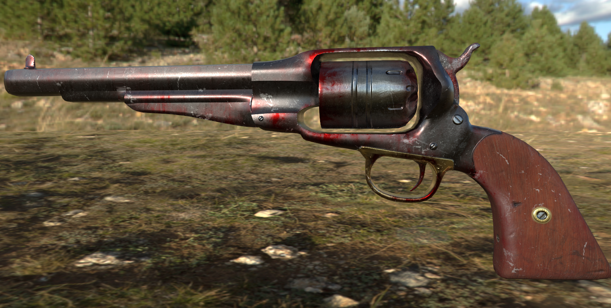
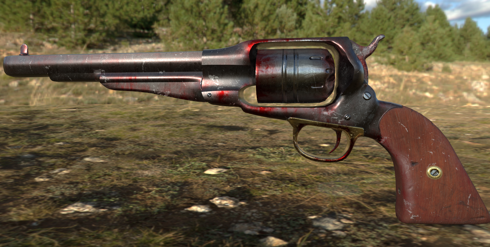
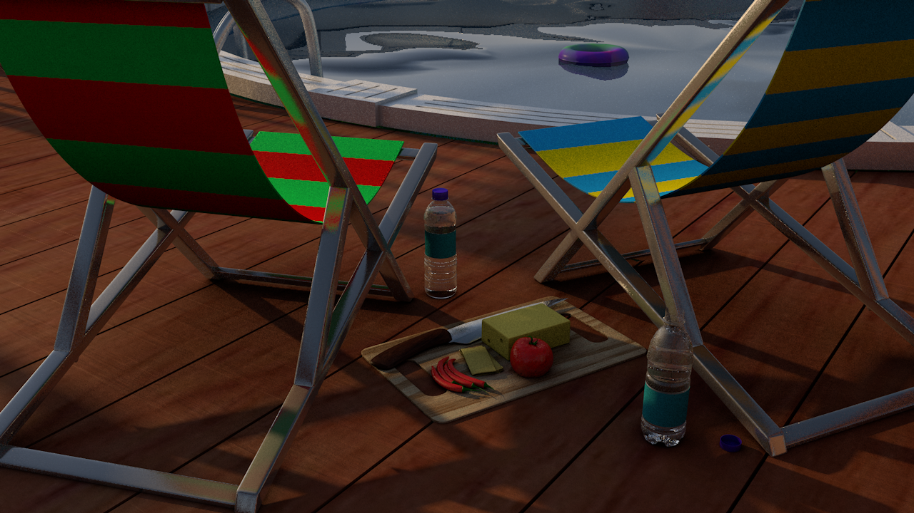
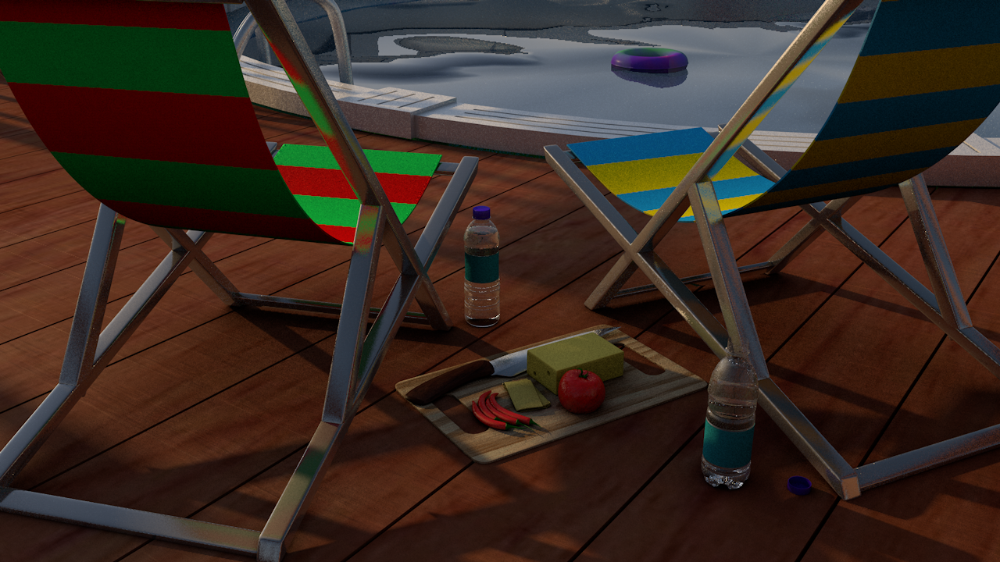

Pizza Time
Pizza Time was my senior project for the University of Connecticut BFA program. It won an award for excellence at the BFA showcase during April of 2022. Pizza Time is a 3d platformer heavily influenced by the 3d platformers during the Nintendo 64 era, like Mario 64, Banjo Kazooie, and Conker's bad fur day. The plot of the game is that you are a slice of pizza that has to travel to the past in order to save his world from the corrupted pineapple pizza. To see my full devlog of this game, click here


 



 
